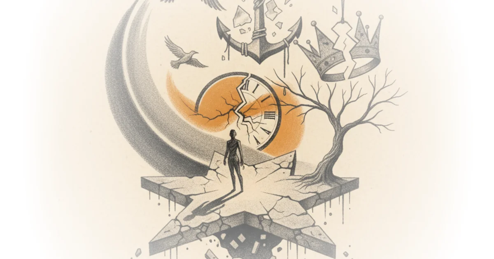

The snail farmer of London, his mafia friends, and a £20m vendetta against the taxman Michael Macleod · London Centric ·Oct 18, 2025 · 22 min read · Culture
Silicon valley's capture of our political institutions is all but complete Brian Merchant · ·Oct 16, 2025 · 13 min read · Culture
Was consciousness invented at the bronze age collapse? Tove K · ·Oct 16, 2025 · 21 min read · Culture
The main way i've seen people turn ideologically crazy Andy Masley · ·Oct 15, 2025 · 11 min read · Culture
Brennan lee mulligan sounds like a real lawyer Ft. Brennan lee mulligan Devin Stone · LegalEagle ·Oct 15, 2025 · 15 min read · Culture
Each of US imperfect comrades Margaret Killjoy · Birds Before the Storm ·Oct 15, 2025 · 12 min read · Culture
What are the best "bad" movies? A statistical analysis Daniel Parris · ·Oct 15, 2025 · 12 min read · Culture
Was famed author peter matthiessen a spy or an informant? Lee Fang · ·Oct 15, 2025 · 12 min read · Culture
Driverless taxis are coming to London's streets in the spring Michael Macleod · London Centric ·Oct 15, 2025 · 12 min read · Culture
New research: Ben greenberg Gary Hustwit · Gary Hustwit's Films ·Oct 14, 2025 · 22 min read · Culture
A cross between dubravka ugresic & georgi gospodinov Chad W. Post · Three Percent ·Oct 14, 2025 · 12 min read · Culture
The battle for the soul of American higher education Roger Pielke Jr. · The Honest Broker ·Oct 14, 2025 · 10 min read · Culture
The cost of standardization Adrian Neibauer · Notes on the State of Education ·Oct 13, 2025 · 17 min read · Culture
Well, then, i'll just add that to my list of reasons to die Matthew Clayfield · ·Oct 11, 2025 · 24 min read · Culture 